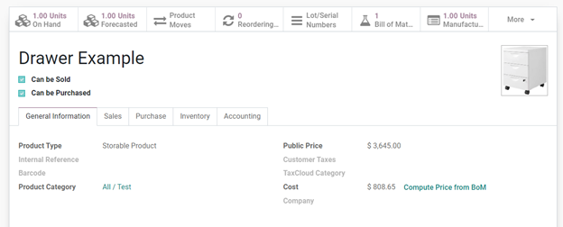

<section class="container">
    <div class="row">
        <div class="col-md-offset-1 col-md-8 mb64 mt64">
            <div>
                <h1 class="display-5 font-weight-bold">MRP Consumed Labor Cost</h1>
                <h2 class="font-weight-bold">Description</h2>
                This module adds labor cost to the cost of a manufactured product based on the work<br/>
                center's hourly rate and expenses' a labor expense account.
            </div>
            <br />
            <div>
                <h2 class="font-weight-bold">Configuration</h2>
                Work centers must be enabled through Manufacturing>Settings>Work Centers
                <br/>
                <br/>
                On the Work Center, set:
                <ul class="px-5">
                    <li>Cost per hour</li>
                    <li>Labor Expense Account</li>
                </ul>
            </div>
            <div class="oe_mb32 oe_demo oe_picture oe_screenshot">
                
            </div>
            Product Category Settings:
            <ul class="px-5">
                <li>Inventory Valuation = Automatic</li>
            </ul>
            <br />
            <div>
                <h2 class="font-weight-bold">Functionality</h2>

                When manufacturing a product the cost of labor will be added to the cost. This cost will update
                on the product template depending on the costing method assigned in the product category.
<br/>
<br/>
                For Example, if the Avg Cost method is set, the cost on the product template will be recalculated
                 using the cost of the manufactured item (Components + Labor).
<br/>
<br/>
                The Labor cost will be added to any product cost with a work center that has a cost per hour
                and a labor expense account filled in. This will be calculated automatically based on the real
                duration of the work center
            </div>
            <br />
            <div>
                <div class="oe_mb32 oe_demo oe_picture oe_screenshot">
                    
                </div>
                When a manufacturing order is complete the cost analysis will be broken down into two parts:
                Cost Structure and Cost of Operations as shown below.
                <div class="oe_mb32 oe_demo oe_picture oe_screenshot">
                    
                </div>
                The Cost on the product template will update accordingly (this will be different per costing method)
                <div class="oe_mb32 oe_demo oe_picture oe_screenshot">
                    
                </div>
                Below is an example of the debit and credit transaction for the adjustment of cost. The Journal
                 Items for th components stay the same, Credit Stock Interim Account and Debit Stock Valuation
                 Account. The new Journal items Credit the expense account and debit the stock interim account.
                 <div class="oe_mb32 oe_demo oe_picture oe_screenshot">
                    
                </div>
            </div>
            <br />
            <div>
                <h2 class="font-weight-bold">Credits</h2>
                <h4 class="font-weight-bold">Contributors</h4>
                <li>Sodexis &lt;<a href="mailto:dev@sodexis.com">dev@sodexis.com</a>&gt;</li><br />
                This module is maintained by Sodexis.<br />
            </div>

        </div>
    </div>
</section>